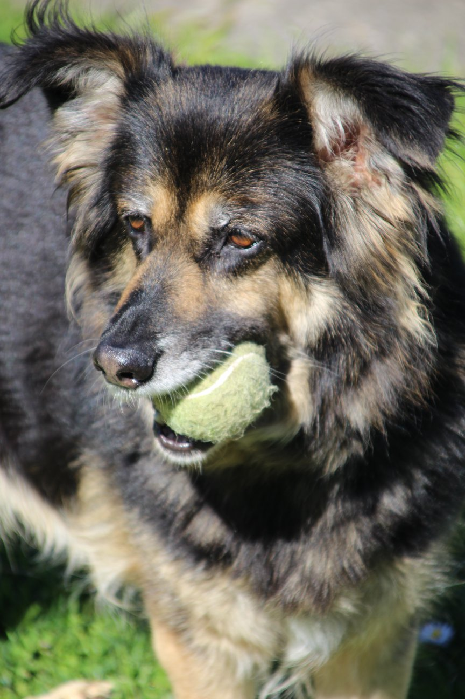
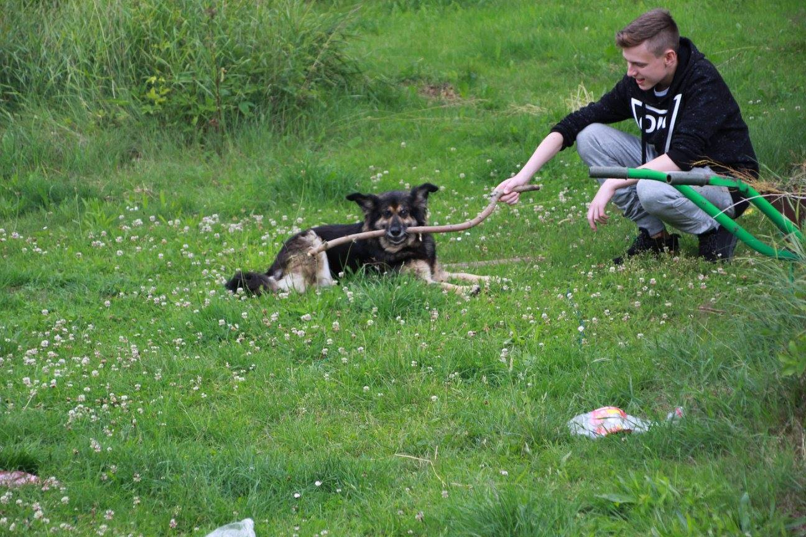
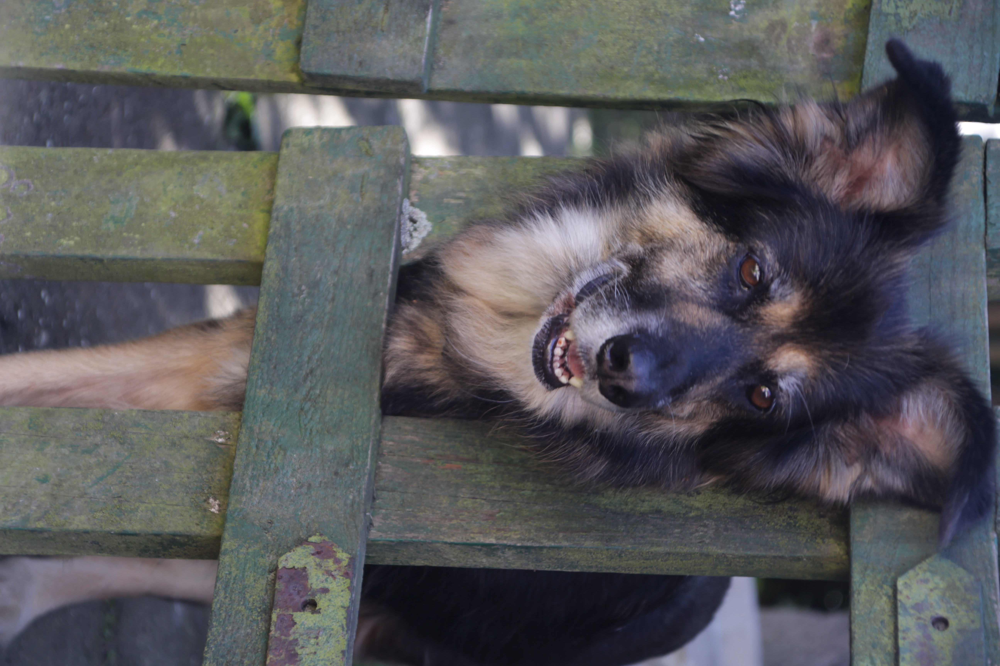
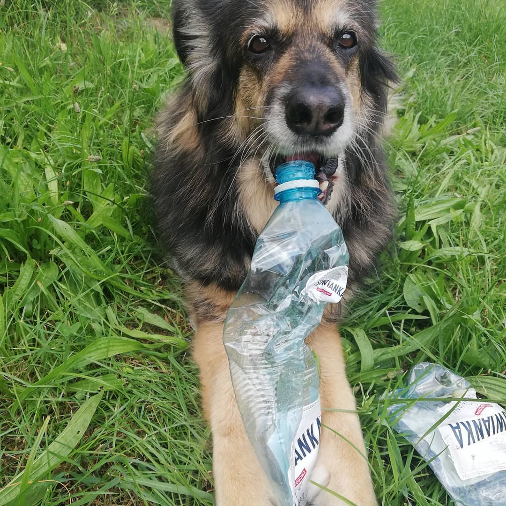

W dniu adopcji powiedziałam Ci, że zmieniam Twoje życie i imię,
a Ty odcisnęłaś łapkę na moim sercu.
Od początku wszystko wiedziałaś i rozumiałaś. Byłaś najbardziej
wrażliwym, delikatnym i inteligentnym psem, jakiego znałam.
Jednocześnie miałaś swoje zdanie i bardzo dobrze potrafiłaś
pokazać swoje granice.
Byłaś otwarta na wszystkich i ciekawa świata. Kochałaś patyki,
plastikowe butelki i piłeczki. Twoimi ulubionymi przysmakami
były twarożek, maślanka i surimi.
Nazywałam Cię moim mniszkiem lekarskim, bo Twoja Miłość i obecność
leczyły mnie ze smutku i rozjaśniały każdy dzień.
Misza 🌼